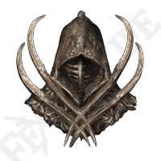

A Simple but powerful build focusing entirely on strength.
Who needs fancy swords or silly magic daggers? All you need is a comedically large hammer or maybe even just a log.
This is a rough outline of the stats you should be aiming for.
Treat this is a general guide and not a rigid ruleset, which means do not be afraid to deviate if you say find a cool magic sword and need some INT, or find yourself suddenly wanting to become an anime loving katana user. Do what you enjoy.
Strength
Increasing your strength will increase your damage. Your target strength is level 99.
Vigor
This is your health, the higher the better. Vigor should be level 50/60 at a minimum.
Endurance
Endurance effects the amount of stamina you have and how much armor you can equip. Endurance should be level 50, or 60 if you find yourself needing a little more equip load.

Green turtle talisman
This will massively increase your stamina regen, very useful for melee fighters.

Great Jars Arsenal
This massively increases your equip load allowing you to equip heavier armour and wield huge weapons.

Claw talisman
This will increase the power of your jump attacks.

Erdtrees favor
This will give a small boost to maximum stamina, HP and equip load allowing your character to be just a little more powerful.